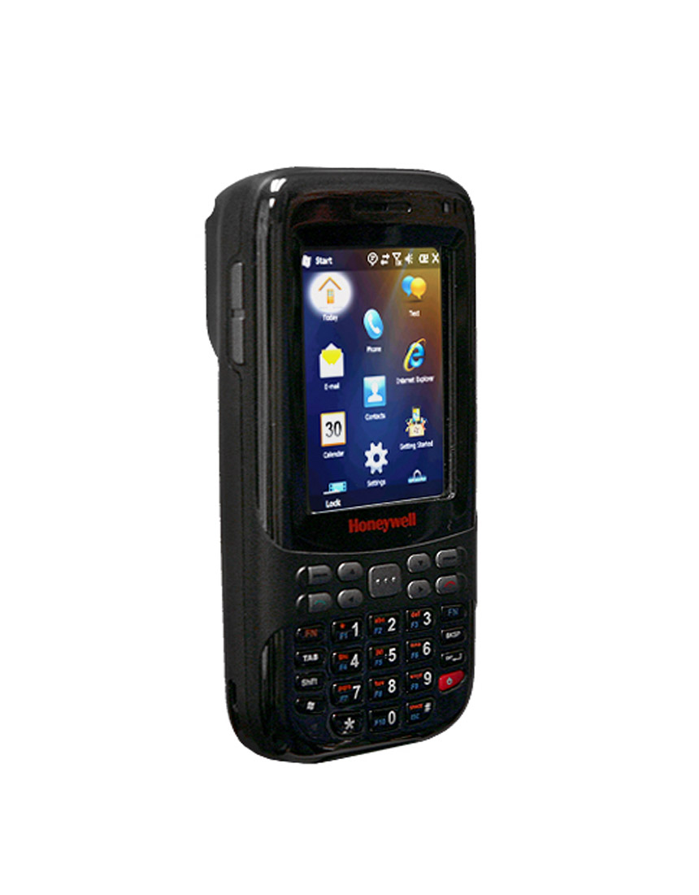

IBM System/360
Uma das famílias de computadores mais importantes da história.

A era dos circuitos integrados.
A terceira geração foi marcada pelo uso dos circuitos integrados, que reuniam vários transistores em um único chip. Isso aumentou ainda mais a velocidade, a confiabilidade e reduziu o tamanho dos computadores.
Surgiram os sistemas operacionais, permitindo a execução de vários programas ao mesmo tempo. O uso de teclados e monitores substituiu os cartões perfurados.

Os principais computadores desse período foram:
Uma das famílias de computadores mais importantes da história.
Muito utilizado em universidades e centros de pesquisa.

Aplicado em ambientes corporativos e governamentais.
Essa geração marcou a transição para a computação moderna, com maior interação entre usuário e máquina. Foi essencial para o surgimento das redes de computadores.
Os computadores da terceira geração usaram circuitos integrados, ficaram mais rápidos e confiáveis. Introduziram sistemas operacionais e dispositivos de entrada mais eficientes.